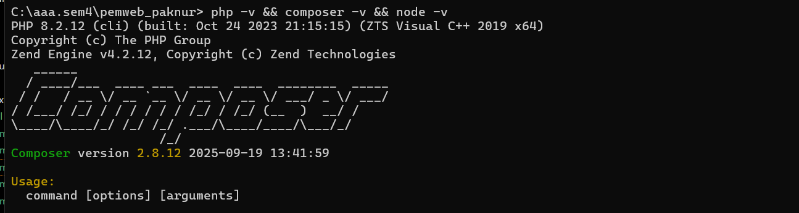
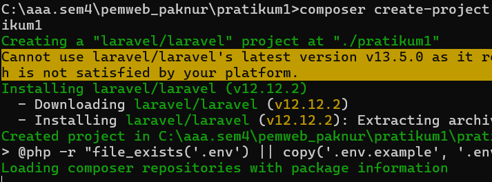
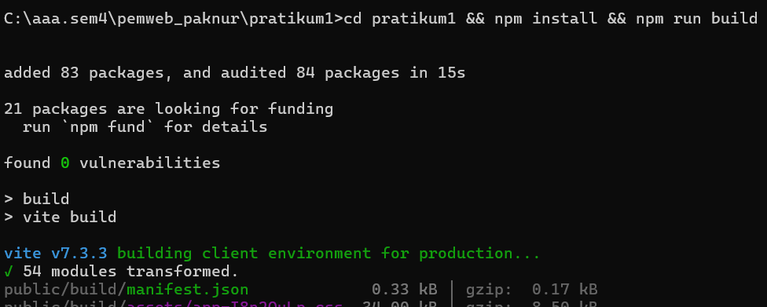
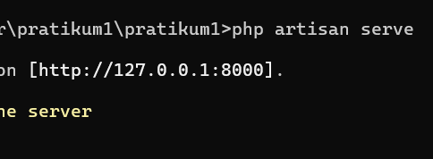
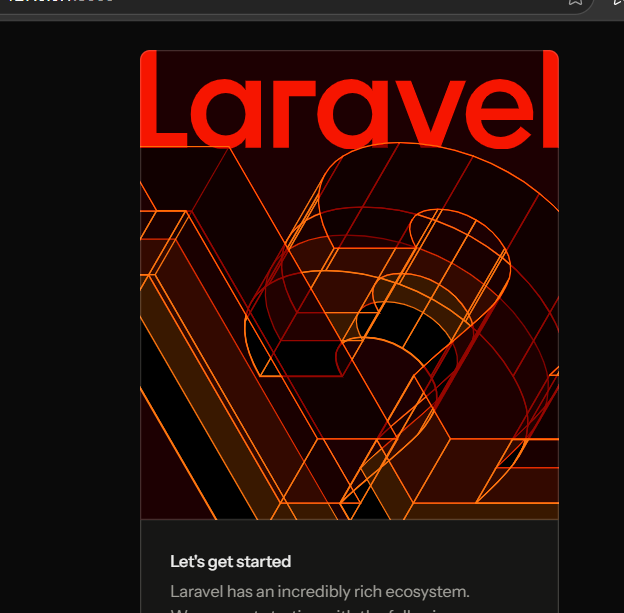
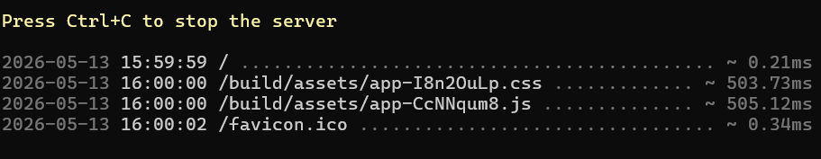
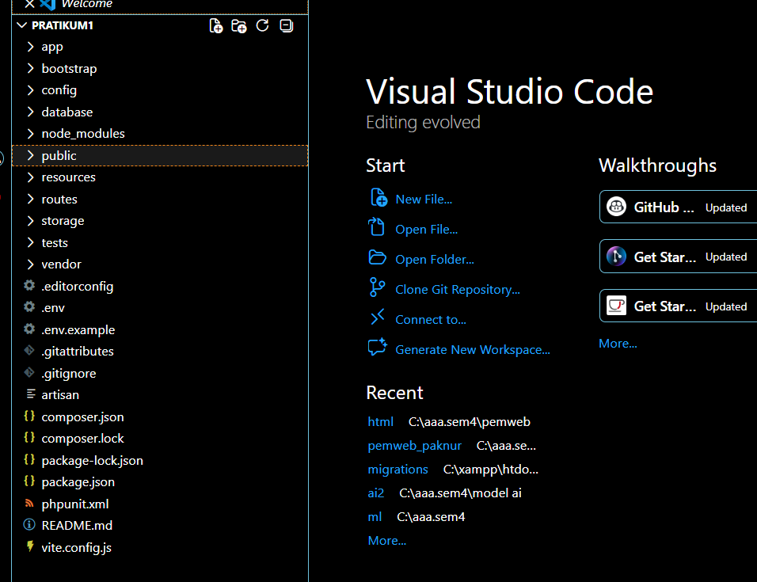
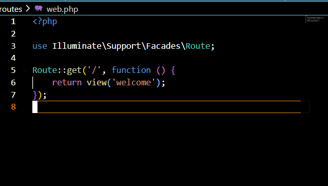
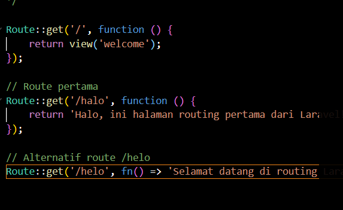
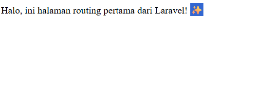

Laporan resmi praktikum — Instalasi, struktur proyek, dan implementasi routing dasar menggunakan Laravel, Composer, dan Artisan Console.
Laravel merupakan salah satu framework PHP berbasis open-source paling populer saat ini. Dikembangkan oleh Taylor Otwell, framework ini menggunakan arsitektur MVC (Model-View-Controller) yang dirancang untuk meningkatkan produktivitas pengembang melalui sintaks yang ekspresif dan elegan. Praktikum ini bertujuan untuk membekali mahasiswa dengan keterampilan dasar dalam mempersiapkan lingkungan pengembangan hingga menjalankan aplikasi web sederhana menggunakan Laravel.
Memastikan seluruh perangkat lunak pendukung telah terkonfigurasi dengan benar melalui terminal. Perintah yang digunakan meliputi pengecekan versi PHP, Composer, dan Node.js untuk kompatibilitas Laravel versi terbaru.

Pembuatan proyek dengan Composer: composer create-project laravel/laravel pratikum1. Proses otomatis mengunduh dependensi dan membentuk struktur folder Laravel. Selanjutnya konfigurasi aset front-end: npm install && npm run build.


Aplikasi dijalankan melalui Artisan Console. Perintah php artisan serve akan mengalokasikan alamat IP lokal http://127.0.0.1:8000 sebagai jalur akses aplikasi melalui peramban web.



Tampilan awal Laravel muncul di browser setelah mengikuti link. Selanjutnya mencoba membuat mekanisme routing.
Modifikasi berkas routes/web.php. Menambahkan route untuk memetakan URL tertentu ke fungsi kembalian sederhana. Buka proyek di VS Code: code .


Kode route yang ditambahkan:


Praktikum ini berhasil membuktikan bahwa Laravel memberikan kemudahan dalam manajemen proyek web melalui fitur-fitur otomatisasinya. Pemahaman mengenai alur kerja Artisan dan struktur routing merupakan fondasi krusial untuk melangkah ke tahap pengembangan aplikasi yang lebih kompleks, seperti integrasi database menggunakan Eloquent ORM.